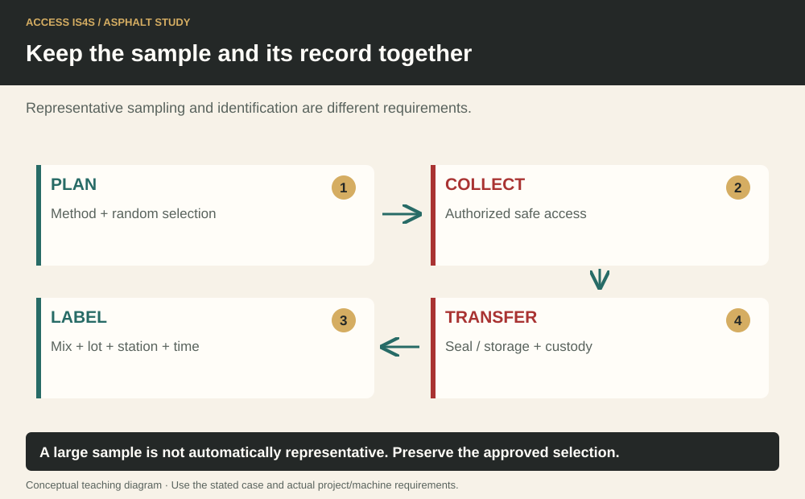
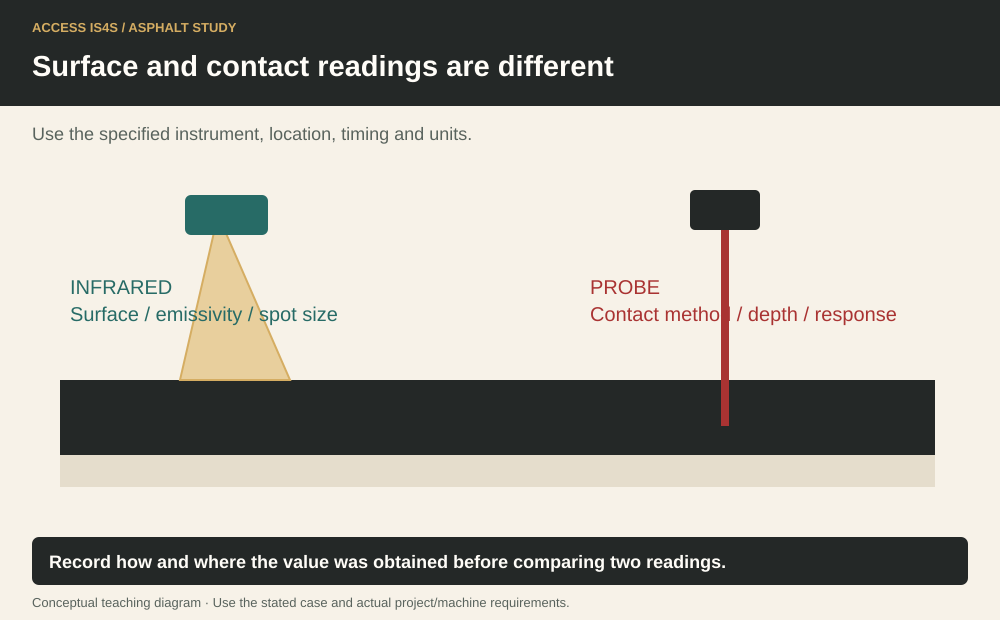

Study chapter · Outline E2
Confirm that samples match mix design
A test result belongs to a sample, and a sample must represent an identified material and interval. Sampling plan, increment, composite sample, sample reduction, container, chain of custody and test method are connected terms. A precise laboratory number is not useful if the wrong material was sampled or its identity was lost.
Learning step 1
Aggregate sampling
Aggregate sampling must follow the specified location, timing, number of increments and method. A convenient scoop from the visible top of a pile may not represent the material being supplied. Weigh-bin or other plant sampling requires the designed safe access and procedure; exposure to hot material, gravity and connected equipment must be controlled.
Preserve product/source identity and the relevant production interval. Combine or reduce samples only as the method permits. Record unusual conditions and contamination. A sample is not made representative by increasing its label detail after an unsuitable collection.
Keep the sample and its record together

Learning step 2
Belt sampling
Belt sampling can characterize a material stream when performed under the approved method and safe arrangement. A worker must not reach across or into a live moving belt. The required isolation/access and sampling device/procedure determine how the sample is obtained. Include the full required stream/fraction rather than selecting the pieces that look most typical.
A drum-plant process record connects the sampled feed with its bin, proportioning and time. A stopped-belt method and an approved automatic sampling device have different controls; neither is replaced by a generic drawing. Keep the sample method and the safe-work method together.
Learning step 3
Lab tests
Laboratory tests can determine gradation, binder content and mixture volumetric or other specified properties. The result must identify the method, units, sample and applicable comparison. Method differences and corrections can affect interpretation. A result outside a limit prompts the defined quality process; it does not justify editing the result or replacing it with a more convenient sample.
Distinguish a JMF target, production variability and the actual contractual acceptance criteria. Quality-control results help manage the process, while acceptance/audit results serve their specified role. Retain original results, corrections and disposition records.
Learning step 4
The process of taking mix temperature readings
Select the temperature instrument and method for the required measurement. An infrared device senses a surface within its field of view; spot size, viewing conditions and surface properties affect the reading. A probe measures at its specified contact/insertion location. Neither automatically represents the entire load.
Verify instrument identity, condition and required check/calibration status. Record the time, location, product/load, units and method. If readings disagree, investigate the different measurement conditions before averaging them. A Celsius/Fahrenheit conversion changes units, not where the temperature was measured.
Surface and contact readings are different

Try it and explain your thinking
Build a sample route from planned location to test report
Build a sample route from planned location to test report. Identify where representativeness, safety and identity can each fail.
Skills you use: Reading, Problem solving, Communication.
Convert a fictional recorded 140°C to Fahrenheit using F = 1.8C + 32
Convert a fictional recorded 140°C to Fahrenheit using F = 1.8C + 32. Explain why a 140°C surface reading is not proof of the internal temperature.
Skills you use: Numeracy, Writing.
Save a sample register for the worked case
Save a sample register for the worked case. A partner supplies a corrected log with an author/date; retain the original and document the resolution rather than overwriting history.
Skills you use: Digital, Collaboration, Adaptability, Creativity and innovation.
Show the skill in supervised practice
Machine/model/serial or classroom case: __________ · Manual/procedure and revision: __________ · Date/location: __________ · Learner/observer: __________
Record each criterion as 0—not yet demonstrated, 1—with task-solving support, or 2—independently under the stated conditions. Mark unobserved criteria separately; do not convert missing opportunity into a zero. The assessor determines the required repeat practice and applicable qualification requirements. A critical failure means hold, correction and reassessment regardless of the numerical result. Use safe simulations for classroom reasoning; actual operation requires the selected equipment, approved conditions and competent supervision.
| What the observer checks | Result | Evidence |
|---|---|---|
| Critical: Safe access, surroundings and communication maintained. | Pass / hold | Observation: __________________ |
| Critical: Required energy, heat, movement and public-access controls maintained for the actual task. | Pass / hold | Observation: __________________ |
| Use the actual approved sampling and hazardous-energy/access procedures with qualified supervision. | 0 / 1 / 2 | Evidence/help: ________________ |
| Observe representative collection/reduction, contamination prevention, labelling and temperature method/recording. | 0 / 1 / 2 | Evidence/help: ________________ |
| Do not stage live-belt access or hot-material handling without the complete authorized arrangement. | 0 / 1 / 2 | Evidence/help: ________________ |
Actual conditions and support: __________________________
Feedback, next practice and authorized release/status: __________________________
Sources and further reading
- SkilledTradesBC. (2016). Asphalt Paving/Laydown Technician program outline, E2, printed p. 45; source PDF pp. 47–47.
- Asphalt Institute. (2007). The asphalt handbook (7th ed., MS-4), Chapter 10: Quality Control and Acceptance of Hot Mix Asphalt; source PDF pp. 479–552. Open publication.
- BC Ministry of Transportation and Transit. (2025). 2025 Standard Specifications for Highway Construction, Volume 2. Open publication.
Figure-specific pages, editions and original contributors are credited beside each image. Current project requirements and the matching machine instructions determine practical use.